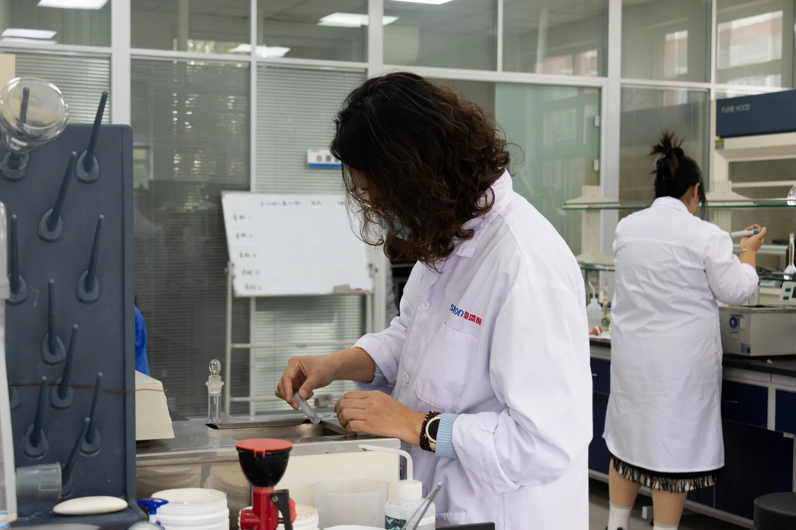
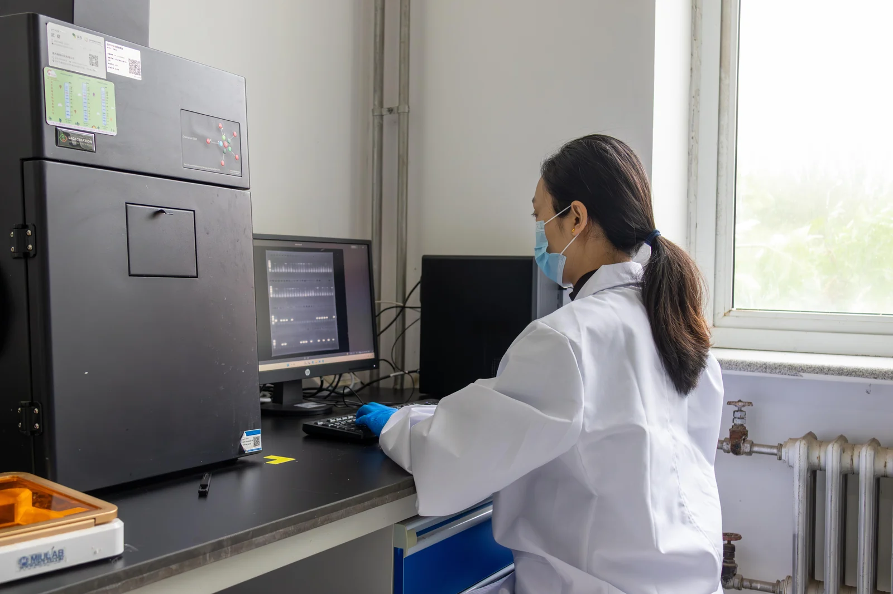

Global research partnerships
Enzyme research
and collaboration.
Bring us a research question that could matter beyond the laboratory.

We welcome conversations with researchers, universities and technical teams working on enzymes, microbial strains and their industrial use.
Our long-term purpose is healthier lives and a healthier planet. An initial discussion starts with what you have observed, what remains unknown and what you want to test next.
Two research centres.
A practical starting point.
SUNSON has a strain research centre and an application research centre. Our strain research includes screening and breeding, supported by a joint laboratory focused on industrial microbiology.
Our research includes a collection of enzyme-producing microbial strains and gene-sequence submissions to GenBank. These are resources for investigating enzymes and their biological sources.
- Strain research
- Investigating the microorganisms behind an enzyme and the traits relevant to its development.
- Application research
- Studying how an enzyme works with an intended material, process or formulation.

Questions we could explore
Start with a problem
worth investigating.
The areas below are starting points for a research discussion. The next step would depend on the evidence available, the expertise needed and an agreed scope of work.
Enzyme discovery and strain development
How could a microbial strain or enzyme be evaluated for an industrial task? Potential topics include strain screening, enzyme characteristics and the evidence needed to assess a candidate.
Enzymes in real materials
How does an enzyme behave in a particular feed ingredient, fruit mash or detergent formulation? A useful study could define the material, comparison, test method and outcome to investigate.
Production and performance
What needs to be understood before a laboratory finding can be used in production? SUNSON’s manufacturing background includes submerged fermentation, separation, membrane concentration and formulation. Possible research questions include stability, process compatibility and reproducibility.
Manufacturing & quality
Make the next question
a clear one.
You may have an early idea or findings from laboratory work. A short introduction can help establish whether there is a useful question to explore together.
Introduce the research
Share a non-confidential summary of the question, your research area and the practical use you have in mind.
Explain what you know
Outline the evidence so far, what remains uncertain and the next experiment or validation you would like to discuss.
Discuss a possible study
Any follow-on work would need an agreed objective, scope, responsibilities and basis for evaluating the findings.
Please use public information or a non-confidential summary for the first conversation. More detailed material can be discussed once the terms for sharing it have been agreed.
What would you
like to investigate?
Tell us about your research and the question you want to explore. Researchers, university teams and technical organisations can use our existing contact route to start the discussion.